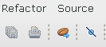

The first thing to do is to select a Java type from JavaBean Inspector dialog.
There are two ways to do that:
Here is how the toolbar button looks like:
After selecting the JavaBean you are ready for using contextual path selector.
See also:
Contextual Path Selector Path Validation